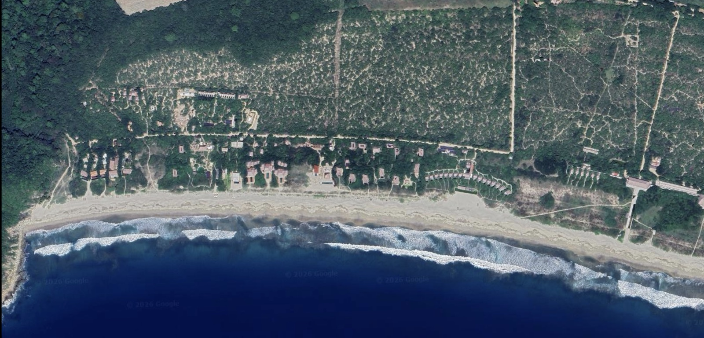
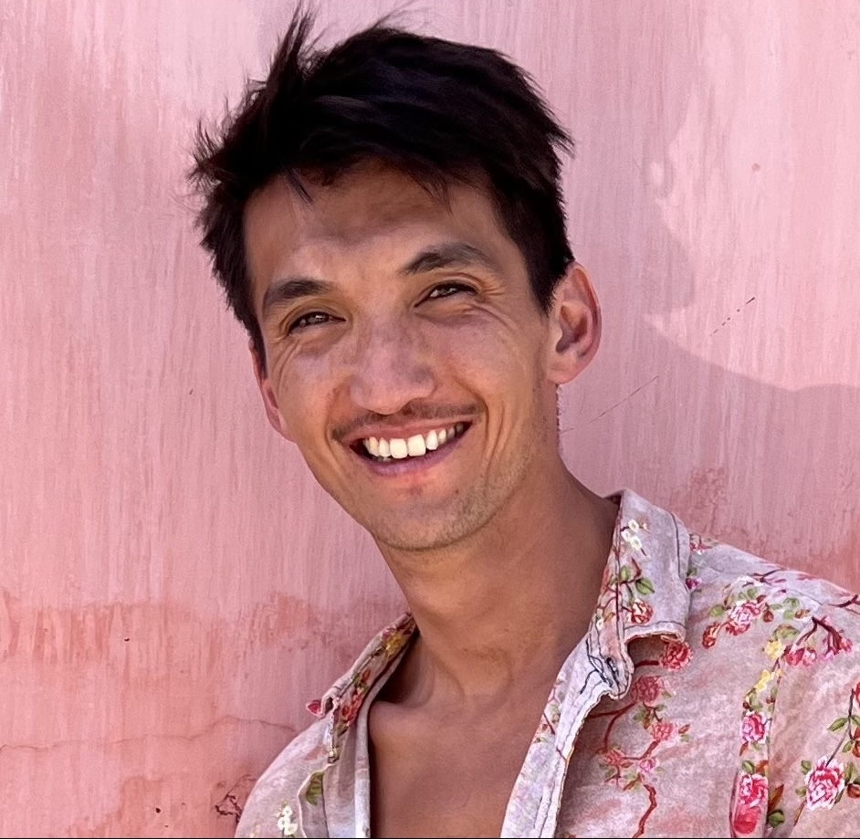

Architecture, art, and a coast that asks you to slow down. Arquitectura, arte y una costa que te pide ir despacio.
A proposal to give the whole community one shared page, and a way to welcome every guest.Una propuesta para darle a toda la comunidad una sola página compartida, y una forma de recibir a cada huésped.
Punta Pájaros is one of the most special places on this coast. Right now, though, it introduces itself in pieces. A listing here, a hotel there, a name passed quietly between friends. A guest can stay a week and never feel the whole of it. Punta Pájaros es uno de los lugares más especiales de esta costa. Pero hoy se presenta a sí mismo en pedazos. Un anuncio por aquí, un hotel por allá, un nombre que pasa en voz baja entre amigos. Un huésped puede quedarse una semana y nunca sentir el conjunto.
Picture instead one beautiful place that lets a guest take in the whole place and fall for it, before they ever arrive and all through their stay. Not a brochure about the area. The living web version of everything a printed brief reaches for. Imagina, en cambio, un solo lugar hermoso que le permita a un huésped tomar el conjunto del lugar y enamorarse de él, antes de llegar y durante toda su estancia. No un folleto sobre el área. La versión web, viva, de todo lo que un documento impreso intenta alcanzar.
The quiet and the distance were never the problem. They are the whole reason this place is worth the trip. A guest just has to feel that before they weigh it against somewhere closer to town, somewhere easier, somewhere that was never trying to be this. La quietud y la distancia nunca fueron el problema. Son justo la razón por la que este lugar vale el viaje. Un huésped solo tiene que sentirlo antes de compararlo con algún lugar más cerca del pueblo, más fácil, un lugar que nunca quiso ser esto.
The real product was never the page. It is a guest falling in love with this place. El verdadero producto nunca fue la página. Es un huésped que se enamora de este lugar.
A single bilingual page that introduces Punta Pájaros. It tells the story of the place. It holds a map, with every home as a pin, each one tapping through to that property's own site or guide. And it carries the curated layer, the part that makes a stay extraordinary: where to eat, the experiences, the massage, the beach at first light, the art and architecture. This is the thread that ties the whole community together. Una sola página bilingüe que presenta y promueve Punta Pájaros. Cuenta la historia del lugar. Sostiene un mapa, con cada casa como un punto, y cada uno lleva al sitio o a la guía de esa propiedad. Y carga la capa curada, la parte que hace una estancia extraordinaria: dónde comer, las experiencias, el masaje, la playa al amanecer, el arte y la arquitectura. Este es el hilo que une a toda la comunidad.

A concept sketch, not the real map yet. Each pin becomes a real home or a local business, with a tap through to its page. Supporting the businesses around the zone is part of the point. Un boceto conceptual, todavía no el mapa real. Cada punto se convierte en una casa real o un negocio local, con un toque que lleva a su página. Apoyar a los negocios de la zona es parte del punto.
The part a guest remembers. Real, personal, local. Not a generated list.La parte que un huésped recuerda. Real, personal, local. No una lista generada.
Final layout uses the zone's own photography, the real images of these places.El diseño final usa la fotografía propia de la zona, las imágenes reales de estos lugares.
Under the shared page sits a layer that belongs to each owner: a welcome guide for every property, and a full website for owners who don't have one yet. These are separate arrangements, home by home, the natural next step rather than part of the community page. Bajo la página común vive una capa que pertenece a cada propietario: una guía de bienvenida para cada propiedad, y un sitio web completo para quienes aún no tienen uno. Son acuerdos por separado, casa por casa, el siguiente paso natural más que parte de la página comunitaria.
The cross-linking is the whole point. The community page sends a guest to a home. Inside that home, one tap books the massage, reserves the chef's dinner, arranges a special experience. A guest discovers the zone, picks a house, and finds everything of value in and around it already within reach. El cruce de enlaces es justo el punto. La página comunitaria lleva al huésped a una casa. Dentro de esa casa, un toque reserva el masaje, aparta la cena del chef, coordina una experiencia especial. El huésped descubre la zona, elige una casa y encuentra todo lo valioso en ella y a su alrededor ya al alcance.
The meal they still talk about. The massage on the terrace. The stillness of the beach at first light. When a stay is worth talking about, people return, they bring friends, they recommend the area by name, they post it without being asked. La comida de la que todavía hablan. El masaje en la terraza. La quietud de la playa al amanecer. Cuando una estancia vale la pena contarla, la gente regresa, trae amigos, recomiendan el lugar por su nombre, la publica sin que nadie se lo pida.
The bookings, the reviews, the influencer attention, the word of mouth: those are byproducts of one thing done well, a guest who genuinely loved being here. So we build that thing directly, the experience itself, rather than a strategy that describes it. Las reservas, las reseñas, la atención de los creadores, el boca a boca: todo eso son subproductos de una sola cosa bien hecha, un huésped que de verdad amó estar aquí. Así que construimos esa cosa directamente, la experiencia misma, en vez de una estrategia que la describe.
Returning guests, not one-time ones. The rest follows. Huéspedes que regresan, no de una sola vez. Lo demás llega solo.
Plainly, and not as apology. This proposal does not try to answer the whole agency brief. I would rather grow into the bigger picture with the right people than overpromise now. So it focuses on the part that creates value first, and the part I can genuinely make beautiful: the guest's experience of the zone. Con claridad, y sin disculpas. Esta propuesta no intenta responder todo el brief de agencia. Prefiero crecer hacia algo más grande, con las personas correctas, en vez de prometer de más ahora. Por eso se enfoca en la parte que crea valor primero, y la que de verdad puedo hacer hermosa: la experiencia del huésped en la zona.
If the community wants that fuller scope down the line, I'm open to collaborating with the right people to bring the half of the team that's missing. For now, I believe this is the most important part, the piece that creates the value and the connection first. Si la comunidad quiere ese alcance más amplio más adelante, estoy abierto a colaborar con las personas indicadas para sumar la otra mitad del equipo que falta. Por ahora, creo que esta es la parte más importante, la pieza que crea el valor y la conexión primero.

I'm Trevor. I live in La Punta, just down the coast, and I build these welcome experiences for homes around Puerto Escondido. I've lived in Puerto Escondido for almost four years, and I've spent real time in this zone, so I know what makes it different. I customize everything, because the whole point is that a place feels like itself. That's the work, and it's work I love. Soy Trevor. Vivo en La Punta, un poco más abajo en la costa, y construyo estas experiencias de bienvenida para casas alrededor de Puerto Escondido. Llevo casi cuatro años viviendo en Puerto Escondido, y he pasado tiempo de verdad en esta zona, así que sé lo que la hace diferente. Personalizo todo, porque el punto entero es que un lugar se sienta como sí mismo. Ese es el trabajo, y es un trabajo que amo.
I want to be clear about what I am. I'm a builder, not a marketing agency. I make the experience itself, the part your guests actually open and feel. Quiero ser claro sobre lo que soy. Soy un constructor, no una agencia de marketing. Hago la experiencia misma, la parte que tus huéspedes de verdad abren y sienten.
See a welcome guide I built for a home nearbyMira una guía de bienvenida que hice para una casa cercanaA custom page for Punta Pájaros: the story, the map with every participating home and the local businesses that make this place special, and the curated layer that points guests to the real tables, beaches, experiences, wellness, and art here. Bilingual, beautiful on every screen, designed with the same care the architecture here was. Each home links out to its own page, and the businesses are part of the map too.Una página a la medida para Punta Pájaros: la historia, el mapa con cada casa participante y los negocios locales que hacen especial a este lugar, y la capa curada que lleva a los huéspedes a las mesas, las playas, las experiencias, el bienestar y el arte de verdad de aquí. Bilingüe, hermosa en cada pantalla, diseñada con el mismo cuidado con que se hizo la arquitectura de aquí. Cada casa enlaza a su propia página, y los negocios también son parte del mapa.
A first version up within a week of starting, not months. Something real you can see, share, and shape.Una primera versión lista en una semana desde que empezamos, no en meses. Algo real que puedes ver, compartir y moldear.
Two rounds of revisions as a group, so the page reflects the whole community. One person gathers the feedback, I build it in, then it's locked and live.Dos rondas de cambios como grupo, para que la página refleje a toda la comunidad. Una persona reúne los comentarios, yo los integro, y luego queda fija y en línea.
One page, built once, for the whole community to share.Una página, hecha una vez, para que toda la comunidad la comparta.
for the full build, shared among the participating homes. How that's divided is for the community to decide together, in whatever way feels fair across the different property sizes.por el desarrollo completo, repartido entre las casas participantes. Cómo se divide lo decide la comunidad en conjunto, de la forma que se sienta justa entre los distintos tamaños de propiedad.
Simple terms: half to begin, half on completion. Homes that join after launch can be added anytime.Términos simples: la mitad para empezar, la mitad al terminar. Las casas que se sumen después del lanzamiento se pueden agregar en cualquier momento.
After the first year, a small annual fee keeps the page current: new homes as they're built, fresh seasonal picks, new restaurants and experiences, photos kept up to date, and hosting. Optional, and far smaller than the build. A living page, not a brochure that goes stale.Después del primer año, una pequeña cuota anual mantiene la página al día: nuevas casas conforme se construyen, recomendaciones de temporada, nuevos restaurantes y experiencias, fotos actualizadas y el alojamiento. Opcional, y mucho menor que el desarrollo. Una página viva, no un folleto que se queda viejo.
You own your domain and your asset. I host and maintain it for you, and if you ever decide to move on, I hand over everything so you can take it anywhere. You're never locked in.Tu dominio y tu activo son tuyos. Yo lo alojo y lo mantengo por ti, y si algún día decides seguir otro camino, te entrego todo para que puedas llevarlo a donde quieras. Nunca quedas atado.
If this feels right, we can start this week. The first version would be live within seven days. Si esto tiene sentido, podemos empezar esta semana. La primera versión estaría lista en siete días.
Message Trevor on WhatsAppEscríbele a Trevor por WhatsApp